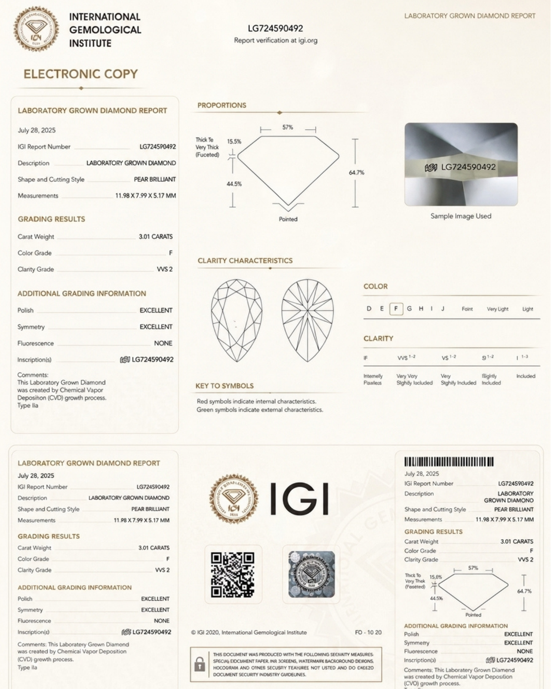

Identity & origin
Check the report number and whether the diamond is described as laboratory-grown or natural. The catalogue example is a laboratory-grown diamond report.
DISCOVER VICTORIA
An independent grading report records the characteristics of an individual diamond. Explore the IGI sample from our catalogue and the details to check on your own report.

Check the report number and whether the diamond is described as laboratory-grown or natural. The catalogue example is a laboratory-grown diamond report.
These fields describe this particular stone. The sample’s grades are an illustration and do not replace the specifications of the diamond you order.
The report records the shape, cutting style, measurements and proportions, alongside the listed polish and symmetry grades.
Use the report number on IGI’s official website and compare its details with your supplied report. Ask our atelier if you need help checking the documentation.
Visit IGI’s official websiteOur existing guarantee includes an independent IGI grading report for lab-grown diamonds over 1.00 carat. Confirm the documentation supplied for your selected diamond with our atelier before ordering.
An IGI diamond grading report and a Victoria Diamonds purchase certificate are different documents. Our purchase certificate records the sale and specifications; it is not an independent valuation.
View our purchase-certificate sampleSpeak with our London atelier about your piece, its paperwork or the best way to care for it.